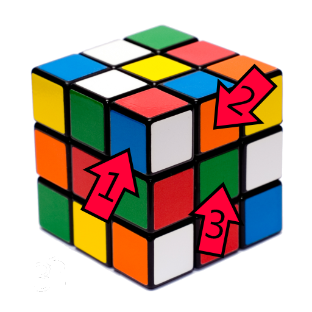

The Rubik's Cube was invented in 1974 by Hungarian architect Ernő Rubik. It is a 6 sided colorful puzzle that was extremely popular in the 1980's. The craze died down in the 90's, however, it experienced a 21st century revival. In order to solve one of these puzzles, you will need to use a set of algorithms, or a memorized sequences of turns. This website will introduce these algorithms and teach you the 6 simple steps you need to solve the puzzle!
The cube has 3 different types of pieces. There are corner pieces, middle pieces, and center pieces. 
Corner pieces have 3 colors, middle pieces have 2, and center pieces have one. In the diagram above, the piece labeled "1" is a corner piece - it has 3 colors: blue, red and white. The piece labeled "2" is a middle piece - it has 2 colors: orange and blue. The piece labeled "3" is a center piece - it only has one color, in this case it is green. An important thing to note is that no matter how you twist or turn the cube, the center pieces will never move - they will always stay the same color.